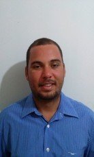

Currículo

Nome: Fernando Luiz Prado Carvalho Júnior
Fone: 79 999993170
Formação
- 2004 - 2007
Graduação em Tecnólogo em Segurança no Trabalho.
Universidade Tiradentes, UNIT, Brasil.
- 2004 - 2007
Graduação em Tecnólogo em Gestão de Ríscos Ambientais.
Universidade Tiradentes, UNIT, Brasil.
- 2000 - 2002
Curso técnico em Zootecnia/profissionalizante.
Instituto Federal de Sergipe, IFS, Brasil.
Formação Complementar
Cursos de extensão em Fé e Cidadania - Escola de Formação Dom José Brandão de Castro 2018
Pós Graduação MBA em Sistema de Gestão Integrada- FANESE 2009
Atuação Profissional
- ATR Trasporetes,
2010 -2018,
Gerenciamento de Resíduos Sólidos,
Responsável Técnico.
- Colégio Técnico Henrrique HENNRY,
2010- 2010,
Função: Professor Visitante da disciplina Segurança em Espaços Confinados.
- Secretaria do Estado da Inclusão Social,
2007 -2009,
Função: Gestão de Programa Sociais.
- Centro de Capacitaçaõ Canudos,
2003 -2003,
Função: Extensão rural para pequenos produtores.
>